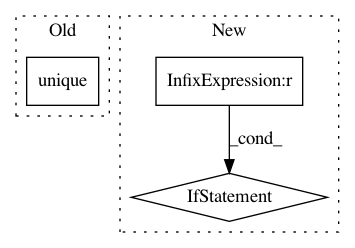

baecce5a6fbe4576ca8348a93dc56f07e7ba84f6,niftynet/contrib/csv_reader/csv_reader.py,CSVReader,_parse_csv,#CSVReader#Any#Any#,72
Before Change
assert set(df.index) == set(self.subject_ids)
df = df.loc[self.subject_ids]
if to_ohe and len(df.columns[1:])==1:
_dims = len(list(df[df.columns[1]].unique()))
_indexable_output = self.to_ohe(df["label"].values, _dims)
return df, _indexable_output, _dims
elif not to_ohe:
After Change
def _parse_csv(self, path_to_csv, to_ohe):
tf.logging.warning("This method will read your entire csv into memory")
df = pd.read_csv(path_to_csv, index_col=0, header=None)
if set(df.index) != set(self.subject_ids):
print(set(self.subject_ids) - set(df.index))
tf.logging.fatal("csv file provided at: {} does not have all the subject_ids".format(path_to_csv))
raise Exception
if to_ohe and len(df.columns)==1:
_dims = len(list(df[1].unique()))
_indexable_output = self.to_ohe(df[1].values, _dims)
return df, _indexable_output, _dims
In pattern: SUPERPATTERN
Frequency: 3
Non-data size: 3
Instances
Project Name: NifTK/NiftyNet
Commit Name: baecce5a6fbe4576ca8348a93dc56f07e7ba84f6
Time: 2019-06-05
Author: ucabtmv@ucl.ac.uk
File Name: niftynet/contrib/csv_reader/csv_reader.py
Class Name: CSVReader
Method Name: _parse_csv
Project Name: NifTK/NiftyNet
Commit Name: c8b28432a637a780eed96547260722ff3dede57e
Time: 2017-10-04
Author: wenqi.li@ucl.ac.uk
File Name: niftynet/engine/sampler_selective.py
Class Name:
Method Name: create_label_size_map
Project Name: keras-team/keras
Commit Name: be24159959672c32abb31697e721d96ae6ffaf97
Time: 2016-02-27
Author: ipod825@gmail.com
File Name: keras/wrappers/scikit_learn.py
Class Name: BaseWrapper
Method Name: fit